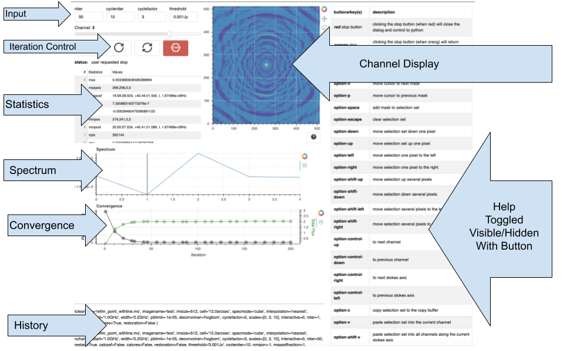
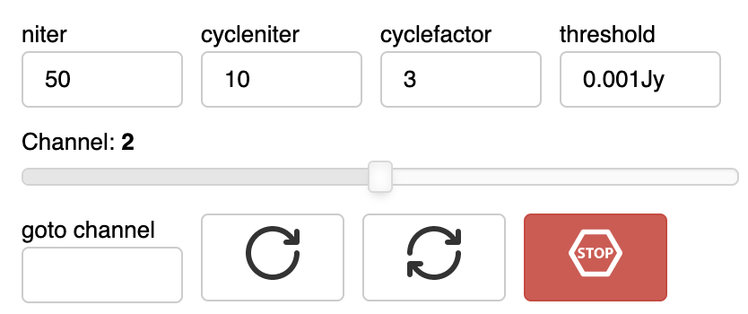
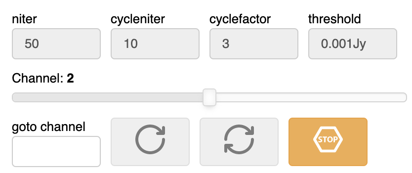
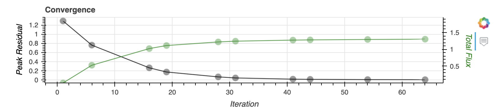
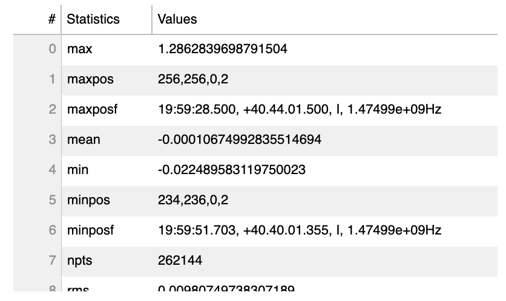
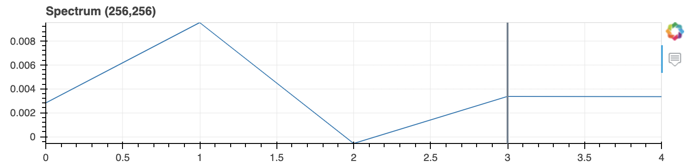

Interactive Clean Design¶
Note
Historical reference. This page describes the design and
implementation of the casagui package, as it stood after the
visualization trade study. cubevis grew out of that work. The page
is kept for reference and is not maintained; names, figures and plans in
it may no longer match cubevis. See Historical reference.
The interactive clean prototype is based upon the Bokeh framework. This framework allows for the development of sophisticated plotting applications in pure-Python. Bokeh’s Python libraries generate JavaScript applications which are then displayed in a web browser. The approach allows for the same GUIs to be used, with minor changes, in Jupyter Notebooks, traditional web sites, and in desktop applications via Electron.
Traditional Approach¶
In the past our GUIs have been very big C++/Qt applications which were monolithic, difficult to make script-able and complex to maintain.
They were monolithic because at the time when Qt was adopted having one GUI library that could be built on different platforms and work with different windowing systems was a big advance. To accomplish this task, an entire, low-level GUI widget library was created. Applications built upon it needed to be built for each platform even though the Qt framework was portable. These applications were stand-alone processes and because of this, they were completely independent of the Python interpreter’s process environment.
All scripting needed to be done by sending messages between the two, e.g.
open file browser or go to channel 5. It was difficult to integrate these
messages at a low enough level to be useful while still having them at a high enough level
for the Python interpreter process so that the user could do useful things without having
to write a significant scripts based on low level messages.
The maintenance complexity arises because the Qt applications are created at a very low level. This results in precise control, but also a very large code base to maintain. For example, the CASA viewer is built from 450379 lines of code that the CASA group maintains:
github.com/AlDanial/cloc v 1.90 T=8.49 s (257.0 files/s, 84496.2 lines/s)
-------------------------------------------------------------------------------
Language files blank comment code
-------------------------------------------------------------------------------
C++ 1062 53563 63941 337561
C/C++ Header 1004 36414 111750 81927
Qt 94 0 0 27056
ProGuard 1 25 24 1376
Python 9 199 372 1060
Perl 6 63 67 533
LLVM IR 1 40 0 302
diff 1 38 431 301
XML 2 59 0 235
Markdown 2 11 0 28
-------------------------------------------------------------------------------
SUM: 2182 90412 176585 450379
-------------------------------------------------------------------------------
In one respect, this is a worst case tally because it includes all of the CASA C++ code upon which the viewer is based (including casacore). However, this estimate is also conservative in the sense that it does not include code that the viewer does not actually use (and does not include unused casacore code).
The situation for casaplotms is somewhat worse:
github.com/AlDanial/cloc v 1.90 T=6.86 s (315.2 files/s, 122683.1 lines/s)
-------------------------------------------------------------------------------
Language files blank comment code
-------------------------------------------------------------------------------
C++ 1082 69021 90887 405452
C/C++ Header 1031 42771 121012 94906
Qt 36 0 0 9385
Python 5 352 668 2924
XML 1 308 0 1555
ProGuard 1 27 19 1323
Perl 4 55 58 483
Protocol Buffers 1 25 0 206
Markdown 1 8 0 79
-------------------------------------------------------------------------------
SUM: 2162 112567 212644 516313
-------------------------------------------------------------------------------
Of these totals, the code that is specific to only the viewer is 69027 lines of code and that specific to only plotms is 145780 lines of code. From either perspective, each of these applications presents significant challenges for build, packaging, maintenance and continuing improvements. A new approach is required.
Framework Approach¶
To avoid the problems discussed to this point, we are attempting to take a new, modern approach. The previous section outlines the challenges with our existing approach which require a new approach. To try to chart a new course, the high-level choices we have made are:
Use a framework that is implemented in pure-Python
Use a development framework that provides higher level functionality instead of low level widgets
Create reusable tools instead of specific applications
Use a framework that is web-centric
These changes have a number of good consequences.
A pure-Python implementation means that the applications we produce will work in a similar way everywhere Python is available. Direct integration with Python also means that we will not experience all of the hurdles we have faced attempting to make our existing GUIs scriptable. It also means that a packaging and distribution mechanism exist to allow users to easily install our software along with all of its dependencies. Better integration with the Python ecosystem also means that things that are currently done in C++ code that CASA maintains can instead be done using Python code that is maintained by the Python community. This is a gradual process so over time we should continue to reap greater rewards as our integration increases.
By choosing a framework that already provides higher level functionality that we require, we can avoid implementing each part of the interface at a fine level of detail. Because it is written in Python, the interface is also specified at a higher level of abstraction than the C++ equivalent. In fact, these frameworks are targeted at data science professionals. This means that over time it should be much easier for some of our users to create GUIs using the framework which can then be directly included into more general interfaces that can be delivered to all of our users.
To avoid creating monolithic applications, we need to look for opportunities to create reusable tools that can be used by a variety of applications. This allows multiple end-user applications to share a common set of components, but it also should extend the development framework in ways that customize it to our domain. This process should then provide some framework components which can be used directly by users who want to create custom GUIs.
By choosing a web-centric framework, we gain portability and generality. Modern web browsers are self-contained visualization environments that are available on all platforms. Using this instead of a large development library like Qt frees us from the need to compile our application for each platform. It also increases our portability beyond just platform portability. By using a web-centric framework, it is much easier to make our GUIs available in Jupyter Notebooks or as a part of stand-alone web-sites. This allows our applications to reach a wide variety of users.
While the advantages of this approach to GUI development vastly outweighs the disadvantages, there are disadvantages. Free-standing applications are set apart for desktop users by their nature. Mixing the CASA GUI in with all of the other things that are done with web browsers causes the GUI to be another tree in the forest. There are also performance ramifications. Due in large part to all of the overhead, purpose-built, compiled applications are very fast compared with just-in-time, on-the-fly web-centric applications because much code is compiled dynamically as the application is loaded. Using the framework directly from a Python interpreter depends on using the web browser that is running on the same host. This is inconvenient for remote use (user logs into a system and runs Python) because the web browser must be displayed remotely with VNC or X11. This particular problem can be resolved by using Electron to create an application that runs on the user’s local host with the application controlling a Python kernel running on the remote host in a model similar to Jupyter Notebooks.
Interactive Clean App¶
The interactive clean app is the first test of this new approach. It
provides a simple GUI interface to
tclean.
To implement this, it uses
CubeMask
component to provide most of the interaction, and adds extra widgets to
control tclean and display convergence and statistics information.
Overview¶
This diagram provides a view of the overall layout of the interactive clean application:


Control¶
The control section of the GUI provides the control panel for the sequence
of tclean executions which will be run during an interactive clean
session:


The row of text boxes make up the input section which provides values for
the corresponding tclean parameters:
niter- maximum number of iterations to runcycleniter- maximum number of minor-cycle iterationscyclefactor- scaling on PSF sidelobe level to compute the minor-cycle stopping thresholdthreshold- stopping threshold (number in units of Jy or string)
The channel slider is provided by the
CubeMask
component. It allows for changing the the channel being displayed. Changing to a different
channel results in all of the GUI elements being updated. The goto channel text
dialog provides a way to go to a specific channel by entering the channel number and
pressing return.
The buttons provide controls to run one (single arrow) or several (double arrow)
tclean runs. When the stop button is red as in this example, clicking the stop
button will cause the interactive clean browser tab to close, interactive clean will stop
in Python, and the last set of masks will be returned. But when the stop button is
orange:


clicking the stop button when it is yellow will cause iteration to stop after the
current tclean run completes. The button color changes from red to yellow
when the run several tclean iterations button (double arrow) is clicked.
Convergence Quality¶
Each time interactive clean completes one iteration, as defined by the input section, the convergence quality components are updated. These indicators include the convergence plot:


This plot includes both Peak Residual and Total Flux plots. The statistics plot includes image statistics for the channel currently being displayed:


Both of these are updated with the completion of each iteration and when the user changes the displayed channel.
Spectrum Display¶
Like the channel slider, the spectrum display is provided by the CubeMask component:


This plot is updated as the cursor moves around in the channel display. Clicking in the channel display freezes spectrum updates and then the spectrum display can be used to go to a specific channel as indicated by the vertical cursor tracking line. Clicking in the spectrum display will cause the channel display to go to the channel indicated by the vertical cursor tracking line.
Implementation Details¶
Like the new MakeMask app, the InteractiveClean app uses the
CubeMask component to implement the display and interaction with the
dirty image cube created by tclean. The
CubeMask component provides a collection of widgets
centered around image cubes. These widgets can be mixed into different
applications.
The InteractiveClean application is available as part of the cubevis
Python package. This package is
available from PyPI.
It can be installed like:
bash$ pip install cubevis
To run InteractiveClean the casatasks package must also be installed.
Once installed, the InteractiveClean application can be imported and run from
the user’s Python session like:
>>> from cubevis.apps import InteractiveClean
>>> InteractiveClean( vis=ms_path, imagename=img, imsize=512, cell='12.0arcsec',
specmode='cube', interpolation='nearest', nchan=5, start='1.0GHz',
width='0.2GHz', pblimit=-1e-05, deconvolver='hogbom', threshold='0.001Jy',
niter=50, cycleniter=10, cyclefactor=3, scales=[0,3,10] )( )
In general, the InteractiveClean constructor takes a subset of parameters accepted
by tclean.
All of the masks used in running interactive clean are available from the
InteractiveClean object. To get access to the list of masks, you would create
the object as a separate statement:
>>> ic = InteractiveClean( vis=ms_path, imagename=img, imsize=512, cell='12.0arcsec',
specmode='cube', interpolation='nearest', nchan=5, start='1.0GHz',
width='0.2GHz', pblimit=-1e-05, deconvolver='hogbom', threshold='0.001Jy',
niter=50, cycleniter=10, cyclefactor=3, scales=[0,3,10] )( )
>>> ic( )
>>> print(ic.masks( ))
In these examples, the InteractiveClean function call (e.g. ic( )) displays
the GUI that was specified in the InteractiveClean object constructor. It is at this
point that the asyncio eventloop is
started. This eventloop processes the events that are used to update the GUI, control the
tclean invocations and finally stop and return control to the user.
When the Bokeh framework is used for scripting from the Python prompt
it creates a GUI with all of the interactions that can be predefined at build time, but updates
from Python that cannot be predetermined (without, for example, loading in the whole image cube)
must be handled outside of Bokeh. Interactions that fall into this category are things like
updating the channel plot in response to user input or updating the convergence plot with
convergence information returned by tclean. The communication for these updates is
handled with websockets. This is true for the
cube display functionality in CubeMask as well as the additional functionality
that the interactive clean implementation adds. The communication for this added functionality
happens via two websockets:
_control_ - pause or stop further calls to
tclean_convergence_ - update convergence quality plot
These are two separate websockets to ensure that _control_ messages are not delayed due
to convergence information updates from tclean executions. More information about
CubeMask is available in the its design document.
In response to control commands from the interactive clean GUI, tclean is called
in Python when the websocket events are received. The results are then transferred to the
browser to update the GUI and the process repeats.
Future Work¶
The fundamental work that remains for the interactive clean application involves using
the IPython Jupyter Kernel
as the process which runs tclean. This seems like it should be possible with no
significant, known problems. Early in our abbreviated trade study, we tested this with
a simpler example (plotants) without significant issues. Making this functionality
available means that interactive clean could be used from a Jupyter Notebook and it could
be integrated into a stand-alone, desktop app based on Electron.
Both of these were tested in the trade study. The final step that was not tested in the
trade study is tclean executing in a remote IPython Kernel. The documentation
indicates that this should be possible. Once this is available, it will be possible to
start a desktop application which then runs CASA tasks in a remote kernel executing on
an NRAO cluster (or other compute resource).